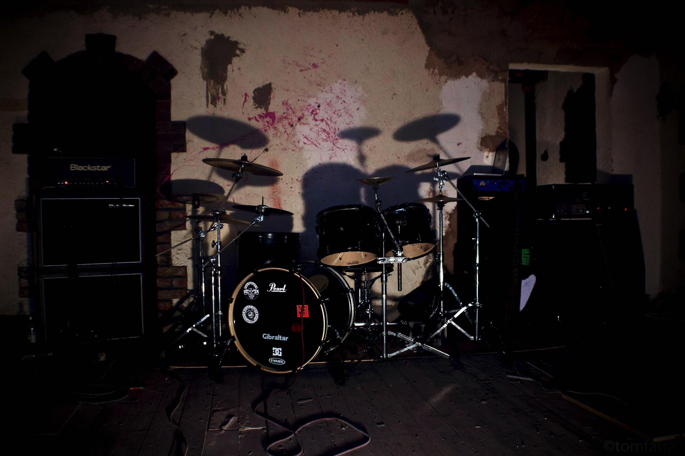

"Citing the likes of Lamb of God & DevilDriver as influences, its clear to hear it, but Deified have also managed to merge the likes of Dillinger Escape Plan’s clean sound and even Benighted-style grind-squeals in to the mix, and it all makes for some perfectly headbangable fun" - Burning Fist UK
We created Deified in 2014, in our Hometown - St. Helens, UK.
Members
- Jamie Hughes - Vocals
- Matt Pike - Lead Guitar
- Alistair Blackhall - Rhythm Guitar
- Tom Simm - Bass Guitar
- Stew Brown - Drums
We started out with our first gig headlining The Lomax, Liverpool with Desolate Horizon & RamRaid. We went onto play Out of the Ashes Festival and dozens of Hometown gigs.
We've got bigger ambitions for 2015 - Debut Album, Promotional Music Video, Small Tour and trying to get our name further.